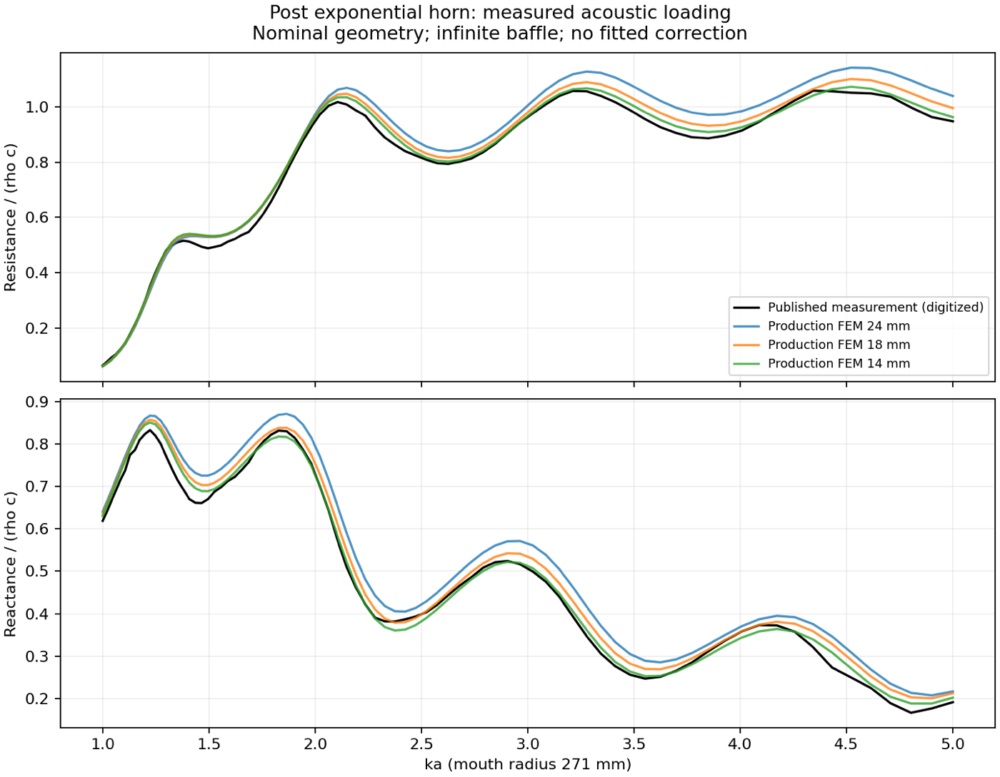

Open-source DIY project, MIT licence
Horn Simulation
A free tool for people who build their own loudspeakers. You say which frequency band a horn must cover and how big it may be. It tries the drivers in its database on many horn shapes and tells you which pairs fit, and why the others do not.
Status: experimental. The numbers it gives are predictions from a computer model. The model agrees with other acoustic software and with one measured horn, but nobody has yet built a horn it designed and measured it with the driver fitted. Treat its answers as a well-informed starting point, not a finished design. Details are under what is and is not checked.
Who it is for
Hobbyists who design and build horn-loaded speakers: a midrange horn for a PA box, a waveguide for a home system, a horn to take over from a bass bin. You should be comfortable with a command line and with Docker. You do not need to know finite element methods.
It covers ordinary single-driver horns that are round in cross-section, with rigid walls, loaded from the front. It does not design cabinets, crossovers, bass reflex boxes or multiple-entry horns.
What it does for you
Choosing a horn and a driver by hand means guessing a throat size, a flare, a length and a mouth, then checking whether a given driver works with it. Each guess takes a simulation, and there are over a thousand drivers. This tool does the guessing and checking for you.
- You give the brief. A frequency band, for example 500 to 4000 Hz, and optional limits: maximum length, maximum mouth size, how much ripple you accept, a minimum level, a power to survive.
- It screens the drivers. The database holds 1454 driver records with their Thiele-Small parameters. Drivers that cannot work in the band are dropped. Throat sizes are proposed to suit the rest.
- It sketches horns. A grid of horns from seven flare profiles: conical, exponential, tractrix, hyperbolic, oblate spheroidal, a scaled tractrix and a cone with an exponential throat.
- A fast model narrows the field. A one-dimensional horn model scores every horn with every driver, often several hundred thousand pairs.
- A detailed model checks the shortlist. The best few horns are solved with a 3D axisymmetric finite element model (FEM), then coupled to every driver again. A short refinement step tries nearby dimensions.
- It reports. Pairs that break one of your limits are rejected, and the report says which limit and by how much. The rest are ranked. You get the dimensions, a STEP file of the air passage, a wall profile you can loft in CAD, and the predicted response, impedance and cone excursion.
Sometimes the honest answer is that nothing fits. The tool says so, and tells you how close the nearest miss came. That is useful too: it tells you which limit to relax.
Examples
Worked example: 800 to 1600 Hz
One run followed step by step, from the command to the files you build from. The answer is an 18Sound 6NMB420 on a 118 mm long horn, with 2.08 dB ripple at 104.13 dB.
Five briefs, five answers
A compact PA midrange, a shallow hi-fi waveguide, a big low-mid horn, a loud vocal horn and the flattest midrange. One found nothing, and one is ranked only because its failures depend on an estimated front chamber. Each is explained in plain words.
What is and is not checked
Every check has a frozen record and a script in the repository. Failures are kept. No tolerance was loosened to get a pass. The full list is in VALIDATION.
Checked
- The 3D solver gives the same answer as an independent finite element code on shared meshes.
- The default mouth model matches an independent mode-matching code for one horn, within 0.02 dB.
- The input impedance of one measured exponential horn (John Post, 1994) is matched within 0.5 dB and 1.9 degrees over about 200 to 1000 Hz, with nothing fitted.
- The fast screen agrees with the openwind package in 35 of 35 cases, and on a test grid it kept the designs an exhaustive 3D search would have picked.
Not checked, or failed
- The level a real driver on a real horn produces, and the order in which drivers are ranked. No complete assembly has been measured.
- The air volume between the cone and the throat (the front chamber). For cone drivers it is estimated from the cone shape. The real adapter will differ.
- Directivity. It assumes the horn sits in an infinite wall. A check with a finite baffle disagrees by several dB.
- Some comparisons fail and are listed as failures, for example a published conical horn standard (Hajicek and Neely) and the 3D model against openwind at low frequency in two cases.

More: STATUS (what works and what is left) and cross-software comparisons.
Run it yourself
You need Docker with at least 8 GB of memory, just, Python 3.10 or newer, Java 17 to 22 and Nextflow 24.10. The quick start covers installation.
git clone https://github.com/timini/horn-simulation.git
cd horn-simulation
just build
# A band and a driver database; the tool works out the horn sizes
just run-auto --target_f_low 800 --target_f_high 1600 \
--drivers_db data/drivers-curated
# Find the run folder, then open outputs/auto/report/auto_report.html in it
just latest-runAdd limits such as --max_length 0.25, --max_mouth_radius 0.175, --max_ripple_db 3 or --min_output_db 106. Sizes are in metres and the mouth limit is a radius. USAGE lists every command and parameter. The full-database examples on this site took between about 8 and 100 minutes each on one computer.
How to help
- Measure something. The thing this project needs most is a built horn and driver measured with a known setup. If you build one of its designs, please share the measurement in an issue. Issue 81 tracks validation.
- Improve driver data. A measured front chamber volume for a driver and adapter is worth more than an estimate. DRIVERS explains the record format and how to add one.
- Compare with other software. Hornresp input sheets are in the repository but have not been run, because Hornresp needs Windows.
- Code and docs. Open an issue before a larger change. DEVELOPMENT covers the layout, tests and CI.
What's next
Next, in order: a finer mesh chosen automatically where frequency bands meet, a search goal of the widest flat band inside a size limit, a maximum SPL figure for each design, and more retailer prices, especially in the US. The driver database with prices is done: about 2,100 drivers, 367 of them with a current price.
After that comes a design database: for every driver, the horns with the best trade-offs between flat bandwidth, level, size and price, on a page where you set your own limits and get the cheapest designs that meet them. Details are in the roadmap.